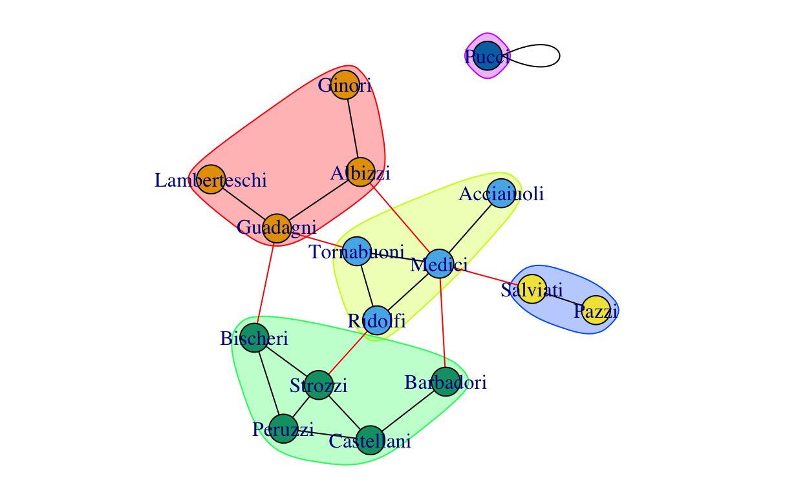
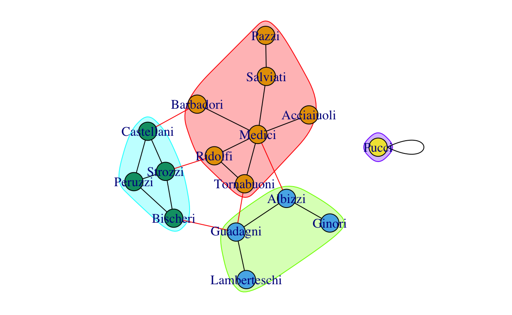
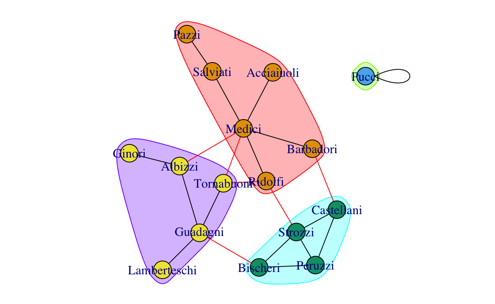
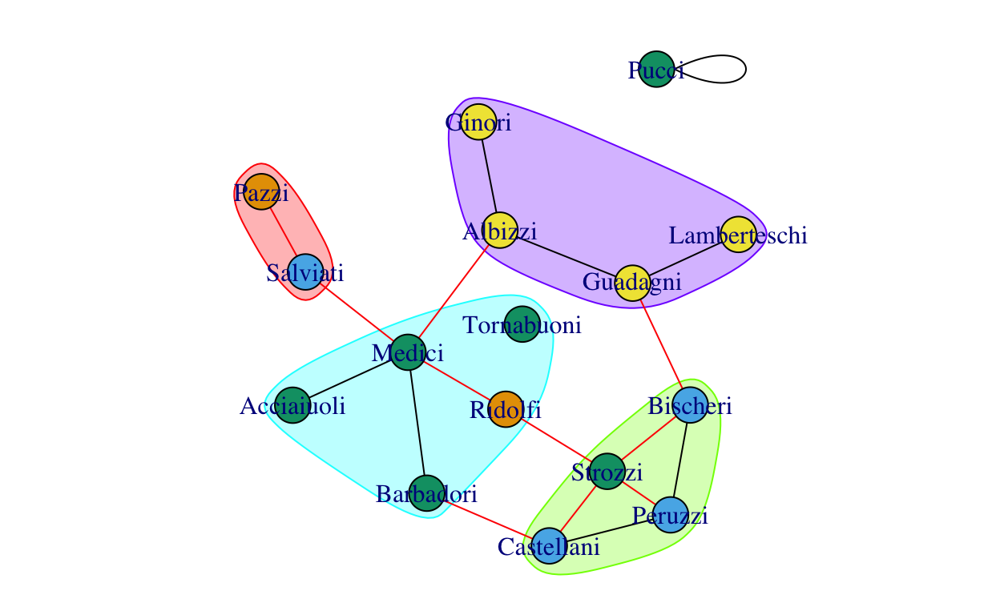

Introduction
This tutorial will demonstrate use of the R commands used in community detection algorithms, as introduced in Week 7’s Lecture. We will look at five possible steps in a community analysis:
Identify communities Inspect density of ties within and between communities Create a community indicator in node measures dataframe Plot network with community coloring *Compare estimated community partitions
We will introduce several different community detection algorithms:
- Fast and Greedy
- Modularity
- Leading Label Propogation
- Edge Betweenness
- Eigenvector
- Spinglass
In addition to the Florentine marriages dataset used for the examples, this tutorial includes access to the GoT marriage network and two airport networks: one is weighted based on distance between the airports (airports.geo…) and the other is weighted based on the number of flights between two airports (airports.fl…). The edge attribute is called “weight”" for the igraph networks, but has a distinct name in the statnet networks. The airport networks are not perfectly symmetric for some unknown reason, and thus read in as directed networks. There is also a network created from alliances data in Correlates of War, alliances.ig and alliances.stat.
Basic Network Description
1. Inspect basic network descriptors
Inspect the network attributes of the airports.fl.stat and airports.geo.stat networks. For this exercise, refer to Week 1 tutorial. This will help you get familiar with the dataset you are using.
Find network size, type (un/directed, un/weighted, bipartite) and available attributes of vertices and edges
#Find network size and type#Find network size and type
print(alliances.stat)
print(airports.fl.stat)
print(airports.geo.stat)
print(flomarr.stat)
print(gotmarr.stat)2. Inspect the Network Structure
Inspect the dyads, triads, and component structure of the airports.fl.stat and airports.geo.stat networks. Pay attention to whether network is connected, as it affects the otions you use for closeness centrality.
#Dyad census, triad census, number and size of components, isolates. Also look at the density and transitivity values#Dyad census, triad census, number and size of components, isolates, density and transitivity
gden(alliances.stat)
gtrans(alliances.stat)
igraph::components(alliances.ig)$no
summary(E(alliances.ig)$weight)
gden(airports.geo.stat)
gtrans(airports.geo.stat)
igraph::components(airports.geo.ig)$no
summary(airports.geo.stat%e%"dist")
gden(airports.fl.stat)
gtrans(airports.fl.stat)
igraph::components(airports.fl.ig)$no
summary(airports.fl.stat%e%"flights")3. Create a network.nodes dataframe
Create a dataframe of standard, applicable node-level measures (from weeks 3-5.) See the routine developed in week 6, as well as the specialized functions for derived and reflected centrality and network brokerage.
#create dataframe with names
#add degree if undirected
#add degree.wt if weighted (and makes sense)
#else add indegree and outdegree if directed
#add sna::bompow for non-singular, unweighted matrix
#else add igraph::power_centrality()
#add betweenness, set gmode for undirected
#add closeness, set gmode for undirected and cmode if not connected
#add constraint (igraph)
#add eigenvector centrality using custom function
#add brokerage using custom func. if vertex attribute + directedalliances.nodes<-data.frame(name=alliances.stat%v%"vertex.names",
degree=sna::degree(alliances.stat,gmode="digraph"),
degree.wt=strength(alliances.ig),
betweenness=sna::betweenness(alliances.stat, gmode="digraph"),
close=sna::closeness(alliances.stat, cmode="suminvdir"),
constraint=constraint(alliances.ig)
)
alliances.nodes<-full_join(alliances.nodes,get.eigen(alliances.stat), by="name")
airports.fl.nodes<-data.frame(name=airports.fl.stat%v%"vertex.names",
degree=sna::degree(airports.fl.stat,gmode="digraph"),
degree.wt=strength(airports.fl.ig),
betweenness=sna::betweenness(airports.fl.stat),
close=sna::closeness(airports.fl.stat, gmode="digraph"),
constraint=constraint(airports.fl.ig))
airports.fl.nodes<-full_join(airports.fl.nodes,get.eigen(airports.fl.stat), by="name")
airports.geo.nodes<- data.frame(name=airports.geo.stat%v%"vertex.names",
degree=sna::degree(airports.geo.stat,gmode="digraph"),
degree.wt=strength(airports.geo.ig),
betweenness=sna::betweenness(airports.geo.stat),
close=sna::closeness(airports.geo.stat, gmode="digraph"))
airports.geo.nodes<-full_join(airports.geo.nodes,get.eigen(airports.geo.stat), by="name")
flomarr.nodes<-data.frame(name=flomarr.stat%v%"vertex.names",
degree=sna::degree(flomarr.stat,gmode="graph"),
betweenness=sna::betweenness(flomarr.stat, gmode="graph"),
close=sna::closeness(flomarr.stat, gmode="graph"),
constraint=constraint(flomarr.ig))
flomarr.nodes<-full_join(flomarr.nodes,get.eigen(flomarr.stat), by="name")
gotmarr.nodes<-data.frame(name=gotmarr.stat%v%"vertex.names",
degree=sna::degree(gotmarr.stat,gmode="graph"),
degree.wt=strength(gotmarr.ig),
bonpow=sna::bonpow(gotmarr.stat),
betweenness=sna::betweenness(gotmarr.stat, gmode="graph"),
close=sna::closeness(gotmarr.stat, gmode="graph"),
constraint=constraint(gotmarr.ig))
gotmarr.nodes<-full_join(gotmarr.nodes,get.eigen(gotmarr.stat, "weight"), by="name")Fast and Greedy Community Detection
This method tries to detect particularly dense subgraphs by optimizing modularity scores. (See http://www.arxiv.org/abs/cond-mat/0408187) It is often tried first for simplicity because it has no parameters to tune. This algorithm is part of the igraph package, and thus you must specify an igraph object. It only works on undirected graphs, or directed graphs must be converted to undirected.
#Run clustering algorithm: fast_greedy
comm.fg<-cluster_fast_greedy(flomarr.ig)
#Inspect clustering object
names(comm.fg)## [1] "merges" "modularity" "membership" "names" "algorithm"
## [6] "vcount"comm.fg## IGRAPH clustering fast greedy, groups: 4, mod: 0.44
## + groups:
## $`1`
## [1] "Acciaiuoli" "Medici" "Pazzi" "Ridolfi" "Salviati"
## [6] "Tornabuoni"
##
## $`2`
## [1] "Albizzi" "Ginori" "Guadagni" "Lamberteschi"
##
## $`3`
## [1] "Barbadori" "Bischeri" "Castellani" "Peruzzi" "Strozzi"
##
## + ... omitted several groups/verticesAs can be seen in the R output, the resulting communities object consists of a significant amount of information, including the optimzed (final) modularity score, a community membership vector, and a specification of which algorithm was used to extract communities. This allows us to compare modularity scores across different clustering algorithms, and also extract membership vectors as described below.
In order to see a complete list of which nodes belong to which clusters, we can easily retrieve this information using groups.
#retrieve list of nodes in communities
igraph::groups(comm.fg)## $`1`
## [1] "Acciaiuoli" "Medici" "Pazzi" "Ridolfi" "Salviati"
## [6] "Tornabuoni"
##
## $`2`
## [1] "Albizzi" "Ginori" "Guadagni" "Lamberteschi"
##
## $`3`
## [1] "Barbadori" "Bischeri" "Castellani" "Peruzzi" "Strozzi"
##
## $`4`
## [1] "Pucci"Exercise: Community cluster
Now, using one of the other networks provided this week, try running the fast, greedy algorithm to partition the network into communities and then retrieve the list of vertex names in each community. Note that if the network is directed, you will need to call the function as.undirected() in order to get this function to work.
#Run clustering algorithm: fast_greedy
#Retrieve list of nodes in communities#Run clustering algorithm: fast_greedy
got.fg<-cluster_fast_greedy(gotmarr.ig)
#Retrieve list of nodes in communities
igraph::groups(got.fg)
#other example networks
alliances.fg<-cluster_fast_greedy(alliances.ig)
igraph::groups(alliances.fg)
airports.fl.fg<-cluster_fast_greedy(as.undirected(airports.fl.ig))
igraph::groups(airports.fl.fg)
airports.geo.fg<-cluster_fast_greedy(as.undirected(airports.geo.ig))
igraph::groups(airports.geo.fg)Inspect Community Density
The substantive goal of community detection is often to identify groups of nodes with a higher density of ties within communities than between communities. The easiest way to quickly calculate the density of ties within and between communities is to use the blockmodel funciton and simply provide the community membership vector in place of a clustering object.
#blockmodel with community membership
blockmodel(flomarr.stat,comm.fg$membership)##
## Network Blockmodel:
##
## Block membership:
##
## 1 2 3 4 5 6 7 8 9 10 11 12 13 14 15 16
## 1 2 3 3 3 2 2 2 1 1 3 4 1 1 3 1
##
## Reduced form blockmodel:
##
## 1 2 3 4 5 6 7 8 9 10 11 12 13 14 15 16
## Block 1 Block 2 Block 3 Block 4
## Block 1 0.40000000 0.08333333 0.06666667 0
## Block 2 0.08333333 0.50000000 0.05000000 0
## Block 3 0.06666667 0.05000000 0.60000000 0
## Block 4 0.00000000 0.00000000 0.00000000 NaN#only retrieve block density object
blockmodel(flomarr.stat,comm.fg$membership)$block.model## Block 1 Block 2 Block 3 Block 4
## Block 1 0.40000000 0.08333333 0.06666667 0
## Block 2 0.08333333 0.50000000 0.05000000 0
## Block 3 0.06666667 0.05000000 0.60000000 0
## Block 4 0.00000000 0.00000000 0.00000000 NaN#print block densities using only 2 digits for readability
print(blockmodel(flomarr.stat,comm.fg$membership)$block.model, digits=2)## Block 1 Block 2 Block 3 Block 4
## Block 1 0.400 0.083 0.067 0
## Block 2 0.083 0.500 0.050 0
## Block 3 0.067 0.050 0.600 0
## Block 4 0.000 0.000 0.000 NaNExercise: Community density
Using the same network in the previous step, try using theblockmodel command to print the density of ties within and between community groups. Feel free to use only a single command that produces output you find acceptable (i.e., you only need to use one of the commands from the previous R example syntax.) Do the community clusters work as intended?
#Inspect density within and between communities#Inspect density within and between communities
print(blockmodel(gotmarr.stat,got.fg$membership)$block.model, digits=2)
#alliances
print(blockmodel(alliances.stat, alliances.fg$membership)$block.model, digits=2)
#airport flights
print(blockmodel(airports.fl.stat,airports.fl.fg$membership)$block.model, digits=2)
#airport distance
print(blockmodel(airports.geo.stat, airports.geo.fg$membership)$block.model, digits=2)Adding Community Membership to Node Info
In order to work with the community clusters produced in the initial step, it is convenient to extract the membership vector and add it into our standard network.nodes dataframe. First, let’s inspect the community memberships, comparing the results to the vertex names stored in the object and the results of the membership function.
#Inspect community membership vector
comm.fg$membership## [1] 1 2 3 3 3 2 2 2 1 1 3 4 1 1 3 1#Compare to vertex names vector
comm.fg$names## [1] "Acciaiuoli" "Albizzi" "Barbadori" "Bischeri"
## [5] "Castellani" "Ginori" "Guadagni" "Lamberteschi"
## [9] "Medici" "Pazzi" "Peruzzi" "Pucci"
## [13] "Ridolfi" "Salviati" "Strozzi" "Tornabuoni"#Membership function
membership(comm.fg)## Acciaiuoli Albizzi Barbadori Bischeri Castellani
## 1 2 3 3 3
## Ginori Guadagni Lamberteschi Medici Pazzi
## 2 2 2 1 1
## Peruzzi Pucci Ridolfi Salviati Strozzi
## 3 4 1 1 3
## Tornabuoni
## 1#Check order of vertex names
V(flomarr.ig)$name## [1] "Acciaiuoli" "Albizzi" "Barbadori" "Bischeri"
## [5] "Castellani" "Ginori" "Guadagni" "Lamberteschi"
## [9] "Medici" "Pazzi" "Peruzzi" "Pucci"
## [13] "Ridolfi" "Salviati" "Strozzi" "Tornabuoni"As can be seen in these results, the membership function provides the information in both the membership and names vector in the original vertex order. Therefore, we can add the information to the flomarr.nodes dataframe and summarize the other node statistics by community.
#add community membership as a node attribute
flomarr.nodes$comm.fg<-comm.fg$membership
#summarize node statistics by community
flomarr.nodes%>%
select(-name)%>% group_by(comm.fg)%>%
mutate(n=n())%>%
summarise_all(mean, na.rm=TRUE)%>%
as.matrix()%>%
print(digits=2)## comm.fg degree bonpow betweenness close constraint eigen eigen.rc
## [1,] 1 2.7 0.22 13.2 0.47 0.60 0.24 0.071
## [2,] 2 2.2 -1.04 10.6 0.44 0.65 0.17 0.057
## [3,] 3 3.0 -0.65 6.9 0.48 0.52 0.28 0.082
## [4,] 4 0.0 0.00 0.0 0.00 0.00 0.00 NaN
## eigen.dc n
## [1,] 0.17 6
## [2,] 0.12 4
## [3,] 0.19 5
## [4,] NaN 1Note that here we can tell that there are 6 nodes in community cluster 1, 4 in community cluster 2, 5 nodes in cluster 5, and only 1 node in cluster 4. What other differences do you notice between clusters?
Because we will be repeating the same steps multiple times this week, lets create a custom function to summarize the node statistics by community group.
nodes.by.gp<-function(network.nodes, groupvar){
network.nodes%>%
select(-name)%>%
group_by_(groupvar) %>%
mutate(n=n())%>%
summarise_all(mean, na.rm=TRUE)%>%
as.matrix()%>%
print(digits=2)
}Now, we can use a single command to produce a summary table of node statistics.
#summarize node statistics by community
nodes.by.gp(flomarr.nodes,"comm.fg")## comm.fg degree bonpow betweenness close constraint eigen eigen.rc
## [1,] 1 2.7 0.22 13.2 0.47 0.60 0.24 0.071
## [2,] 2 2.2 -1.04 10.6 0.44 0.65 0.17 0.057
## [3,] 3 3.0 -0.65 6.9 0.48 0.52 0.28 0.082
## [4,] 4 0.0 0.00 0.0 0.00 0.00 0.00 NaN
## eigen.dc n
## [1,] 0.17 6
## [2,] 0.12 4
## [3,] 0.19 5
## [4,] NaN 1Exercise: Add Node Info
Try adding on the community membership vector as a node attribute and summarizing node statistics by community. If you have forgotten which nodes belong to each community group, use the command provided in step 1 to retrieve node names.
#add community membership as a node attribute
#summarize node statistics by community
#retrieve list of nodes in each group (if you forgot earlier result)#add community membership as a node attribute
gotmarr.nodes$comm.fg<-got.fg$membership
#summarize node statistics by community
nodes.by.gp(gotmarr.nodes,"comm.fg")
#retrieve list of nodes in each group
igraph::groups(got.fg)
alliances.nodes$comm.fg<-alliances.fg$membership
nodes.by.gp(alliances.nodes,"comm.fg")
airports.fl.nodes$comm.fg<-airports.fl.fg$membership
nodes.by.gp(airports.fl.nodes,"comm.fg")
airports.geo.nodes$comm.fg<-airports.geo.fg$membership
nodes.by.gp(airports.geo.nodes,"comm.fg")Plot the Network with Community Colors
Igraph has a built-in function to color nodes by community that doesn’t require the researcher to add the membership vector to the network as a vertex attribute. To automatically color nodes by community membership, simply include the community object in the plotting call as follows.
#plot network with community coloring
plot(comm.fg,flomarr.ig)
Exercise: Plot Network With Community Coloring
Using the clustering object created in step 1, plot the network with community coloring.
#plot network with community coloring#plot network with community coloring
plot(got.fg,gotmarr.ig)
plot(alliances.fg,alliances.ig)
plot(airports.fl.fg,airports.fl.ig)
plot(airports.geo.fg,airports.geo.ig)Walktrap Community Detection
This algorithm detects communities based on random walks across the network. It can handle a weights argument, which makes it a good tool for weighted networks. Higher weights increase the probability that a random walker goes in that direction vs the direction of a tie with a lower weight.
#Run clustering algorithm: walktrap
comm.wt<-walktrap.community(flomarr.ig)
#Inspect community membership
igraph::groups(comm.wt)## $`1`
## [1] "Albizzi" "Ginori" "Guadagni" "Lamberteschi"
##
## $`2`
## [1] "Acciaiuoli" "Medici" "Ridolfi" "Tornabuoni"
##
## $`3`
## [1] "Barbadori" "Bischeri" "Castellani" "Peruzzi" "Strozzi"
##
## $`4`
## [1] "Pazzi" "Salviati"
##
## $`5`
## [1] "Pucci"The critical parameter for the walktrap method is steps=x, and the value of \(x\) can result in different community membership vectors (and also affect how long the algorithm takes to run). Let’s try with more steps. Do you have any ideas about what might be going on when we increase the number of steps?
#Run & inspect clustering algorithm: 10 steps
igraph::groups(walktrap.community(flomarr.ig, steps=10))## $`1`
## [1] "Albizzi" "Ginori" "Guadagni" "Lamberteschi"
##
## $`2`
## [1] "Acciaiuoli" "Medici" "Ridolfi" "Tornabuoni"
##
## $`3`
## [1] "Barbadori" "Bischeri" "Castellani" "Peruzzi" "Strozzi"
##
## $`4`
## [1] "Pazzi" "Salviati"
##
## $`5`
## [1] "Pucci"#Run & inspect clustering algorithm: 20 steps
igraph::groups(walktrap.community(flomarr.ig ,steps=20))## $`1`
## [1] "Acciaiuoli" "Albizzi" "Ginori" "Guadagni"
## [5] "Lamberteschi" "Medici" "Ridolfi" "Tornabuoni"
##
## $`2`
## [1] "Barbadori" "Bischeri" "Castellani" "Peruzzi" "Strozzi"
##
## $`3`
## [1] "Pazzi" "Salviati"
##
## $`4`
## [1] "Pucci"#Run & inspect clustering algorithm
igraph::groups(walktrap.community(flomarr.ig, steps=100))## $`1`
## [1] "Acciaiuoli" "Albizzi" "Barbadori" "Ginori" "Medici"
## [6] "Ridolfi" "Tornabuoni"
##
## $`2`
## [1] "Pazzi" "Salviati"
##
## $`3`
## [1] "Bischeri" "Castellani" "Peruzzi" "Strozzi"
##
## $`4`
## [1] "Guadagni" "Lamberteschi"
##
## $`5`
## [1] "Pucci"The community object can be used in the various steps introduced earlier. Lets inspect density of ties within and between communities, and the characteristics of nodes in each community.
#inspect density of between/within community ties
print(blockmodel(flomarr.stat,comm.wt$membership)$block.model, digits=2)## Block 1 Block 2 Block 3 Block 4 Block 5
## Block 1 0.50 0.12 0.05 0.00 0
## Block 2 0.12 0.67 0.10 0.12 0
## Block 3 0.05 0.10 0.60 0.00 0
## Block 4 0.00 0.12 0.00 1.00 0
## Block 5 0.00 0.00 0.00 0.00 NaN#add community membership as a vertex attribute
flomarr.nodes$comm.wt<-comm.wt$membership
#summarize node statistics by community
nodes.by.gp(flomarr.nodes,"comm.wt")## comm.wt degree bonpow betweenness close constraint eigen eigen.rc
## [1,] 1 2.2 -1.044 10.6 0.44 0.65 0.174 0.057
## [2,] 2 3.2 0.380 16.5 0.52 0.53 0.307 0.090
## [3,] 3 3.0 -0.645 6.9 0.48 0.52 0.277 0.082
## [4,] 4 1.5 -0.095 6.5 0.38 0.75 0.095 0.032
## [5,] 5 0.0 0.000 0.0 0.00 0.00 0.000 NaN
## eigen.dc comm.fg n
## [1,] 0.117 2 4
## [2,] 0.217 1 4
## [3,] 0.195 3 5
## [4,] 0.063 1 2
## [5,] NaN 4 1Finally, lets try plotting the network with walktrap community coloring.
#plot network with community coloring
plot(comm.wt,flomarr.ig)
Exercise: Walk Trap
Repeat all of the above steps for one of the other datasets provided this week.
#Run clustering algorithm: walktrap
#Inspect community membership
#Optional: Experiment with steps option
#inspect density of between/within community ties
#add community membership as a vertex attribute
#summarize node statistics by community
#plot the network with community coloring#Run clustering algorithm: walktrap
got.wt<-walktrap.community(gotmarr.ig)
#Inspect community membership
igraph::groups(got.wt)
#inspect density of between/within community ties
print(blockmodel(gotmarr.stat,got.wt$membership)$block.model, digits=2)
#add community membership as a vertex attribute
gotmarr.nodes$comm.wt<-got.wt$membership
#summarize node statistics by community
nodes.by.gp(gotmarr.nodes,"comm.wt")
#plot the network with community coloring
plot(got.wt,gotmarr.ig)
alliances.wt<-walktrap.community(alliances.ig)
igraph::groups(alliances.wt)
print(blockmodel(alliances.stat,alliances.wt$membership)$block.model, digits=2)
alliances.nodes$comm.wt<-alliances.wt$membership
nodes.by.gp(alliances.nodes,"comm.wt")
plot(alliances.wt,alliances.ig)
airports.fl.wt<-walktrap.community(airports.fl.ig)
print(blockmodel(airports.fl.stat,airports.fl.wt$membership)$block.model, digits=2)
airports.fl.nodes$comm.wt<-airports.fl.wt$membership
nodes.by.gp(airports.fl.nodes,"comm.wt")
plot(airports.fl.wt,airports.fl.ig)
airports.geo.wt<-walktrap.community(airports.geo.ig)
print(blockmodel(airports.geo.stat,airports.geo.wt$membership)$block.model, digits=2)
airports.geo.nodes$comm.wt<-airports.geo.wt$membership
nodes.by.gp(airports.geo.nodes,"comm.wt")
plot(airports.geo.wt,airports.geo.ig)Compare Community Partitions
How different are the community clusters that were created using this method? It is possible to manually compare the block densities within and between the community groups, compare the average node statistics in the resulting communities, or visually inspect the colored network plots. One alternative approach is to directly compare the modularity index produced by each partition.
#compare community partition modularity scores
modularity(comm.fg)## [1] 0.4410431modularity(comm.wt)## [1] 0.3922902As expected, the partition produced by the fast, greedy algorithm is characterized by a higher modularity score than the one produced by the walktrap algorithm. This is expected because the goal of fast, greedy is to optimize modularity. But would you agree that the resulting partition is necessariy superior to the community partiton produced by walktrap?
One thing to notice is that as we compare additional algorithms, it will be easier to simply add each new modularity score to a list and return that list for comparison, rather than cutting and pasting the code to recover each individual modularity index each time. To do this, we will use c() to create a new list, called mods, and will add to this list with each algorithm.
#collect modularity scores to compare
mods<-c(fastgreedy=modularity(comm.fg), walktrap=modularity(comm.wt))
mods## fastgreedy walktrap
## 0.4410431 0.3922902Another approach is to use the compare function which provides several different methods for comparing the network partitions: "vi", "nmi", "split.join", "rand", "adjusted.rand". For a relatively accessible (but still sort of challenging) overview of the different approaches to comparing network partitions, see this article.
Differences between two partitions can be calculated using the two entropy-based information measures vi and nmi, plus split.join. nmi varies between 0 and 1, while vi has a much higher upper bound than nmi. split.join is also a distance based measure, capturing the projection distance between the two partitions - or intuitively how many moves (like a Rubiks Cube) are required to go from one partition to another. It returns two values (as the distance from partition A to partition B is not necessariy the same as the distance from partition B to partition A.) Higher numbers on split.join mean that two partitions are less similar to (or more distant from) each other. vi is more affected by the number of community groups than slit.join.
Both Rand index measures vary between 0 and 1, and indicate the proportion of times that the two partitioning methods agree that two nodes belong in the same community, with the adjusted version also taking into account the possibility of random variation in clustering. For now, lets see the results of all 5 methods.
#compare community partitions using variation of information
compare(comm.fg,comm.wt,method="vi")## [1] 0.2386928#compare community partitions using normalized mutual information
compare(comm.fg,comm.wt,method="nmi")## [1] 0.9129178#compare community partitions using split join distance
compare(comm.fg,comm.wt,method="split.join")## [1] 2#compare community partitions using Rand index
compare(comm.fg,comm.wt,method="rand")## [1] 0.9333333#compare community partitions using adjusted Rand index
compare(comm.fg,comm.wt,method="adjusted.rand")## [1] 0.8100514One thing to notice comparing the two Rand index measures is that the adjusted one is much lower than the standard measure not adjusted for random variation in clustering. The two partitions appear to be fairly similar based on the Rand index, but less so once random variation is taken into account. In and of itself, the comparison scores don’t tell us which method is better - but they do provide a sense of how similar the partitions produced by two methods are - and thus can be useful when comparing the results of a specific partitioning approach to a gold standard partition.
Finally, note that once again, the code in the previous R snippet will start to grow much longer as we try to compare additional community partition algorithms. An alternative is to use a custom function that uses expand.grid in combination with a for() loop to quickly cycle through multiple combinations and calculate the comparative metrics.
compare.algs<-function(alg.a,alg.b,compare.meth=c("vi", "nmi", "split.join", "rand", "adjusted.rand")){
#create list of community objects and methods
comm.compare<-expand.grid(alg.a=alg.a, alg.b=alg.b, meth=compare.meth, result=NA, stringsAsFactors = FALSE)
#compare community partitions using a loop
for(i in 1:nrow(comm.compare)){
comm1<-get(comm.compare$alg.a[i])
comm2<-get(comm.compare$alg.b[i])
method<-comm.compare$meth[i]
comm.compare$result[i]<-compare(comm1, comm2, method)
}
return(comm.compare)
}Once the compare.algs() function is set up, all you need to do is provide it with a vector of the community object names (alg.a) that you wish to compare to the baseline community partition (alg.b). Note that you can decide which methods to use to compare partitions. By default, the compare.algs function currently returns all 5 available metrics.
#compare community partitions
compare.algs(alg.a=c("comm.fg"),alg.b="comm.wt")Exercise: Compare two partitions
Compare the fast, greedy partition to the walktrap partition you created using your chosen network. How similar are the two partitions, particularly in comparison to the similarity that we observed in the community partitions of the Florentine marriage network or some other network you have inspected?
#collect modularity scores to compare
#compare community partitions#collect modularity scores to compare
mods<-c(fastgreedy=modularity(got.fg), walktrap=modularity(got.wt))
mods
#compare community partitions
compare.algs(alg.a=c("got.fg"),alg.b="got.wt")
#alliances
alliances.mods<-c(fastgreedy=modularity(alliances.fg), walktrap=modularity(alliances.wt))
alliances.mods
#compare community partitions
compare.algs(alg.a=c("alliances.fg"),alg.b="alliances.wt")
#airports.flights
mods<-c(fastgreedy=modularity(airports.fl.fg), walktrap=modularity(airports.fl.wt))
mods
#compare community partitions
compare.algs(alg.a=c("airports.fl.fg"),alg.b="airports.fl.wt")
#airports.geograph
mods<-c(fastgreedy=modularity(airports.geo.fg), walktrap=modularity(airports.geo.wt))
mods
#compare community partitions
compare.algs(alg.a=c("airports.geo.fg"),alg.b="airports.geo.wt")Leading Label Propagation Community Detection
Label propogation is a fast algorithm that uses neighborhood voting to find communities. It can used weighted networks if you have a weight edge attribute or use the options weights=.
#Run clustering algorithm: leading label
comm.lab<-label.propagation.community(flomarr.ig)
#Inspect community membership
igraph::groups(comm.lab)## $`1`
## [1] "Acciaiuoli" "Albizzi" "Barbadori" "Ginori" "Medici"
## [6] "Pazzi" "Salviati"
##
## $`2`
## [1] "Bischeri" "Castellani" "Guadagni" "Lamberteschi"
## [5] "Peruzzi" "Ridolfi" "Strozzi" "Tornabuoni"
##
## $`3`
## [1] "Pucci"We can describe and plot the label propagation communities.
#inspect density of between/within community ties
print(blockmodel(flomarr.stat,comm.lab$membership)$block.model, digits=2)## Block 1 Block 2 Block 3
## Block 1 0.286 0.071 0
## Block 2 0.071 0.357 0
## Block 3 0.000 0.000 NaN#add community membership as a vertex attribute
flomarr.nodes$comm.lab<-comm.lab$membership
#summarize node statistics by community
nodes.by.gp(flomarr.nodes,"comm.lab")## comm.lab degree bonpow betweenness close constraint eigen eigen.rc
## [1,] 1 2.3 -0.949 12.6 0.45 0.65 0.18 0.058
## [2,] 2 3.0 0.071 8.5 0.48 0.53 0.28 0.082
## [3,] 3 0.0 0.000 0.0 0.00 0.00 0.00 NaN
## eigen.dc comm.fg comm.wt n
## [1,] 0.12 1.6 2.4 7
## [2,] 0.20 2.2 2.2 8
## [3,] NaN 4.0 5.0 1#plot network with community coloring
plot(comm.lab,flomarr.ig)
Finally, lets compare the different community partitions. Note that you can use the c() function to just add a new item, the modularity index of our new community partition, to the vector of modularity scores, mods. Similarly, we just add the two previous algorithms to the alg.a vector, and then set the new algorithm to be alg.b.
#collect modularity scores to compare
mods<-c(mods, label=modularity(comm.lab))
mods## fastgreedy walktrap label
## 0.4410431 0.3922902 0.3356009#compare community partitions
compare.algs(alg.a=c("comm.fg","comm.wt"),alg.b="comm.lab")Exercise: Leading Label Propagation
Repeat the basic community analysis routine for one of the other datasets provided this week.
#Run clustering algorithm: leading label
#Inspect community membership
#inspect density of between/within community ties
#add community membership as a vertex attribute
#summarize node statistics by community
#plot the network with community coloring
#collect modularity scores to compare
#compare community partitions#Run clustering algorithm: leading label
got.lab<-walktrap.community(gotmarr.ig)
#Inspect community membership
igraph::groups(got.lab)
#inspect density of between/within community ties
print(blockmodel(gotmarr.stat,got.lab$membership)$block.model, digits=2)
#add community membership as a vertex attribute
gotmarr.nodes$comm.lab<-got.lab$membership
#summarize node statistics by community
nodes.by.gp(gotmarr.nodes,"comm.lab")
#plot the network with community coloring
plot(got.lab,gotmarr.ig)
#collect modularity scores to compare
mods<-c(mods, label=modularity(comm.lab))
mods
#compare community partitions
compare.algs(alg.a=c("got.fg","got.wt"),alg.b="got.lab")
#alliances
alliances.lab<-walktrap.community(alliances.ig)
igraph::groups(alliances.lab)
print(blockmodel(alliances.stat,alliances.lab$membership)$block.model, digits=2)
alliances.nodes$comm.lab<-alliances.lab$membership
nodes.by.gp(alliances.nodes,"comm.lab")
plot(alliances.lab,alliances.ig)
mods<-c(mods, label=modularity(comm.lab))
mods
compare.algs(alg.a=c("alliances.fg","alliances.wt"),alg.b="alliances.lab")
#airport flights
airports.fl.lab<-walktrap.community(airports.fl.ig)
igraph::groups(airports.fl.lab)
print(blockmodel(airports.fl.stat,airports.fl.lab$membership)$block.model, digits=2)
airports.fl.nodes$comm.lab<-airports.fl.lab$membership
nodes.by.gp(airports.fl.nodes,"comm.lab")
plot(airports.fl.lab,airports.fl.ig)
mods<-c(mods, label=modularity(comm.lab))
mods
compare.algs(alg.a=c("airports.fl.fg","airports.fl.wt"),alg.b="airports.fl.lab")
#airport geography
airports.geo.lab<-walktrap.community(airports.geo.ig)
igraph::groups(airports.geo.lab)
print(blockmodel(airports.geo.stat,airports.geo.lab$membership)$block.model, digits=2)
airports.geo.nodes$comm.lab<-airports.geo.lab$membership
nodes.by.gp(airports.geo.nodes,"comm.lab")
plot(airports.geo.lab,airports.geo.ig)
mods<-c(mods, label=modularity(comm.lab))
mods
compare.algs(alg.a=c("airports.geo.fg","airports.geo.wt"),alg.b="airports.geo.lab")Edge Betweenness Community Detection
Edge betweenness looks for communities with sparse connections between them and works by eliminating high betweenness nodes. It can used weighted networks if you have a weight edge attribute or use the options weights=. The algorithm automatically adjusts betweenness scores for directed networks, although this can be adjusted by setting the option directed=FALSE.
#Run clustering algorithm: edge betweenness
comm.edge<-label.propagation.community(flomarr.ig)
#Inspect community membership
igraph::groups(comm.edge)## $`1`
## [1] "Acciaiuoli" "Barbadori" "Medici" "Pazzi" "Ridolfi"
## [6] "Salviati" "Tornabuoni"
##
## $`2`
## [1] "Albizzi" "Ginori" "Guadagni" "Lamberteschi"
##
## $`3`
## [1] "Bischeri" "Castellani" "Peruzzi" "Strozzi"
##
## $`4`
## [1] "Pucci"We can describe and plot the edge betweenness communities.
#inspect density of between/within community ties
print(blockmodel(flomarr.stat,comm.edge$membership)$block.model, digits=2)## Block 1 Block 2 Block 3 Block 4
## Block 1 0.333 0.071 0.071 0
## Block 2 0.071 0.500 0.062 0
## Block 3 0.071 0.062 0.833 0
## Block 4 0.000 0.000 0.000 NaN#add community membership as a vertex attribute
flomarr.nodes$comm.edge<-comm.edge$membership
#summarize node statistics by community
nodes.by.gp(flomarr.nodes,"comm.edge")## comm.edge degree bonpow betweenness close constraint eigen eigen.rc
## [1,] 1 2.6 -0.027 12.5 0.47 0.59 0.23 0.067
## [2,] 2 2.2 -1.044 10.6 0.44 0.65 0.17 0.057
## [3,] 3 3.2 -0.427 6.5 0.48 0.52 0.29 0.091
## [4,] 4 0.0 0.000 0.0 0.00 0.00 0.00 NaN
## eigen.dc comm.fg comm.wt comm.lab n
## [1,] 0.17 1.3 2.7 1.3 7
## [2,] 0.12 2.0 1.0 1.5 4
## [3,] 0.20 3.0 3.0 2.0 4
## [4,] NaN 4.0 5.0 3.0 1#plot network with community coloring
plot(comm.edge,flomarr.ig)
Compare the various community partitions created so far by adding to the modularity index vector and using our custom function.
#collect modularity scores to compare
mods<-c(mods, edge=modularity(comm.edge))
mods## fastgreedy walktrap label edge
## 0.4410431 0.3922902 0.3356009 0.4342404#compare community partitions
compare.algs(alg.a=c("comm.fg","comm.wt", "comm.lab"), alg.b="comm.edge")Exercise: Edge Betweenness
Repeat the basic community analysis routine for one of the other datasets provided this week.
#Run clustering algorithm: edge betweenness
#Inspect community membership
#inspect density of between/within community ties
#add community membership as a vertex attribute
#summarize node statistics by community
#plot the network with community coloring
#compare modularity scores
#compare community partitions#Run clustering algorithm: edge betweenness
got.edge<-edge.betweenness.community(gotmarr.ig)
#Inspect community membership
igraph::groups(got.edge)
#inspect density of between/within community ties
print(blockmodel(gotmarr.stat,got.edge$membership)$block.model, digits=2)
#add community membership as a vertex attribute
gotmarr.nodes$comm.edge<-got.edge$membership
#summarize node statistics by community
nodes.by.gp(gotmarr.nodes,"comm.edge")
#plot the network with community coloring
plot(got.edge,gotmarr.ig)
#collect modularity scores to compare
mods<-c(mods, edge=modularity(comm.edge))
mods
#compare community partitions
compare.algs(alg.a=c("got.fg","got.wt", "got.lab"),alg.b="got.edge")
#alliances
alliances.edge<-edge.betweenness.community(alliances.ig)
igraph::groups(alliances.edge)
print(blockmodel(alliances.stat,alliances.edge$membership)$block.model, digits=2)
alliances.nodes$comm.edge<-alliances.edge$membership
nodes.by.gp(alliances.nodes,"comm.edge")
plot(alliances.edge,alliances.ig)
mods<-c(mods, edge=modularity(comm.edge))
mods
compare.algs(alg.a=c("alliances.fg","alliances.wt", "alliances.lab"), alg.b="alliances.edge")
#airport flights
airports.fl.edge<-edge.betweenness.community(airports.fl.ig)
igraph::groups(airports.fl.edge)
print(blockmodel(airports.fl.stat,airports.fl.edge$membership)$block.model, digits=2)
airports.fl.nodes$comm.edge<-airports.fl.edge$membership
nodes.by.gp(airports.fl.nodes,"comm.edge")
plot(airports.fl.edge,airports.fl.ig)
mods<-c(mods, edge=modularity(comm.edge))
mods
compare.algs(alg.a=c("airports.fl.fg","airports.fl.wt", "airports.fl.lab"), alg.b="airports.fl.edge")
#airport geography
airports.geo.edge<-edge.betweenness.community(airports.geo.ig)
igraph::groups(airports.geo.edge)
print(blockmodel(airports.geo.stat,airports.geo.edge$membership)$block.model, digits=2)
airports.geo.nodes$comm.edge<-airports.geo.edge$membership
nodes.by.gp(airports.geo.nodes,"comm.edge")
plot(airports.geo.edge,airports.geo.ig)
mods<-c(mods, edge=modularity(comm.edge))
mods
compare.algs(alg.a=c("airports.geo.fg","airports.geo.wt", "airports.geo.lab"), alg.b="airports.geo.edge")Eigenvector Community Detection
The leading eigenvector community detection method is based on the eigenvectors of the modularity matrix of the network. It has a few options such as steps and start that might be useful, but are not typically used. A weighted network can be used with the standards weights opton or an appropriately named “weights” edge attribute.
#Run clustering algorithm: leading eigenvector
comm.eigen<-leading.eigenvector.community(flomarr.ig)
#Inspect community membership
igraph::groups(comm.eigen)## $`1`
## [1] "Acciaiuoli" "Barbadori" "Medici" "Pazzi" "Ridolfi"
## [6] "Salviati"
##
## $`2`
## [1] "Pucci"
##
## $`3`
## [1] "Bischeri" "Castellani" "Peruzzi" "Strozzi"
##
## $`4`
## [1] "Albizzi" "Ginori" "Guadagni" "Lamberteschi"
## [5] "Tornabuoni"We can describe and plot the leading eigenvector communities.
#inspect density of between/within community ties
print(blockmodel(flomarr.stat,comm.eigen$membership)$block.model, digits=2)## Block 1 Block 2 Block 3 Block 4
## Block 1 0.333 0 0.083 0.10
## Block 2 0.000 NaN 0.000 0.00
## Block 3 0.083 0 0.833 0.05
## Block 4 0.100 0 0.050 0.40#add community membership as a vertex attribute
flomarr.nodes$comm.eigen<-comm.eigen$membership
#summarize node statistics by community
nodes.by.gp(flomarr.nodes,"comm.eigen")## comm.eigen degree bonpow betweenness close constraint eigen eigen.rc
## [1,] 1 2.5 -0.22 13.2 0.46 0.61 0.22 0.066
## [2,] 2 0.0 0.00 0.0 0.00 0.00 0.00 NaN
## [3,] 3 3.2 -0.43 6.5 0.48 0.52 0.29 0.091
## [4,] 4 2.4 -0.61 10.2 0.46 0.61 0.20 0.061
## eigen.dc comm.fg comm.wt comm.lab comm.edge n
## [1,] 0.15 1.3 2.8 1.2 1.0 6
## [2,] NaN 4.0 5.0 3.0 4.0 1
## [3,] 0.20 3.0 3.0 2.0 3.0 4
## [4,] 0.14 1.8 1.2 1.6 1.8 5#plot network with community coloring
plot(comm.eigen,flomarr.ig)
Compare the various community partitions created so far by adding to the modularity index and using our custom function.
#collect modularity scores to compare
mods<-c(mods, eigen=modularity(comm.eigen))
mods## fastgreedy walktrap label edge eigen
## 0.4410431 0.3922902 0.3356009 0.4342404 0.4070295#compare community partitions
compare.algs(alg.a=c("comm.fg","comm.wt", "comm.lab", "comm.edge"), alg.b="comm.eigen")Exercise: Eigenvector Communities
Repeat the basic community analysis routine for one of the other datasets provided this week.
#Run clustering algorithm: leading eigenvector
#Inspect community membership
#inspect density of between/within community ties
#add community membership as a vertex attribute
#summarize node statistics by community
#plot the network with community coloring
#compare modularity scores
#compare community partitions#Run clustering algorithm: leading eigenvector
got.eigen<-leading.eigenvector.community(gotmarr.ig)
#Inspect community membership
igraph::groups(got.eigen)
#inspect density of between/within community ties
print(blockmodel(gotmarr.stat,got.eigen$membership)$block.model, digits=2)
#add community membership as a vertex attribute
gotmarr.nodes$comm.eigen<-got.eigen$membership
#summarize node statistics by community
nodes.by.gp(gotmarr.nodes,"comm.eigen")
#plot the network with community coloring
plot(got.eigen,gotmarr.ig)
#collect modularity scores to compare
mods<-c(mods, eigen=modularity(comm.eigen))
mods
#compare community partitions
compare.algs(alg.a=c("got.fg","got.wt", "got.lab", "got.edge"), alg.b="got.eigen")
#alliances
alliances.eigen<-leading.eigenvector.community(alliances.ig)
igraph::groups(alliances.eigen)
print(blockmodel(alliances.stat,alliances.eigen$membership)$block.model, digits=2)
alliances.nodes$comm.eigen<-alliances.eigen$membership
nodes.by.gp(alliances.nodes,"comm.eigen")
plot(alliances.eigen,alliances.ig)
mods<-c(mods, eigen=modularity(comm.eigen))
mods
compare.algs(alg.a=c("alliances.fg","alliances.wt", "alliances.lab", "alliances.edge"), alg.b="alliances.eigen")
#airport flights
airports.fl.eigen<-leading.eigenvector.community(airports.fl.ig)
igraph::groups(airports.fl.eigen)
print(blockmodel(airports.fl.stat,airports.fl.eigen$membership)$block.model, digits=2)
airports.fl.nodes$comm.eigen<-airports.fl.eigen$membership
nodes.by.gp(airports.fl.nodes,"comm.eigen")
plot(airports.fl.eigen,airports.fl.ig)
mods<-c(mods, eigen=modularity(comm.eigen))
mods
compare.algs(alg.a=c("airports.fl.fg","airports.fl.wt", "airports.fl.lab", "airports.fl.edge"), alg.b="airports.fl.eigen")
#airport geography
airports.geo.eigen<-leading.eigenvector.community(airports.geo.ig)
igraph::groups(airports.geo.eigen)
print(blockmodel(airports.geo.stat,airports.geo.eigen$membership)$block.model, digits=2)
airports.geo.nodes$comm.eigen<-airports.geo.eigen$membership
nodes.by.gp(airports.geo.nodes,"comm.eigen")
plot(airports.geo.eigen,airports.geo.ig)
mods<-c(mods, eigen=modularity(comm.eigen))
mods
compare.algs(alg.a=c("airports.geo.fg","airports.geo.wt", "airports.geo.lab", "airports.geo.edge"), alg.b="airports.geo.eigen")Spinglass Community Detection
If we ran this algoritm on our entire network, we would get an error. This algorithm doesn’t work with a disconnected graphs! Let’s run it on a connected component subgraph. We first need to create a custom function to extract the giant component.
giant.component <- function(graph) {
cl <- clusters(graph)
induced.subgraph(graph, which(cl$membership == which.max(cl$csize)))
}#extract giant component
flomarr.giant<-giant.component(flomarr.ig)#Run clustering algorithm: spinglass
comm.spin<-spinglass.community(flomarr.giant)
#Inspect community membership
igraph::groups(comm.spin)## $`1`
## [1] "Pazzi" "Salviati"
##
## $`2`
## [1] "Bischeri" "Castellani" "Peruzzi" "Strozzi"
##
## $`3`
## [1] "Acciaiuoli" "Barbadori" "Medici" "Ridolfi" "Tornabuoni"
##
## $`4`
## [1] "Albizzi" "Ginori" "Guadagni" "Lamberteschi"We can describe and plot the spinglass communities. Note the changes to the line adding community membership as a vertex attribute. The which() statement omits the nodes that are not part of the giant component when matching the community membership vector. Not including this alteration will produce an error due to different vector lengths.
#inspect density of between/within community ties
print(blockmodel(flomarr.stat,comm.spin$membership)$block.model, digits=2)## Block 1 Block 2 Block 3 Block 4
## Block 1 0.00 0.125 0.250 0.000
## Block 2 0.12 0.333 0.208 0.062
## Block 3 0.25 0.208 0.200 0.083
## Block 4 0.00 0.062 0.083 0.500#add community membership as a vertex attribute
flomarr.nodes$comm.spin[which(flomarr.nodes$name%in%V(flomarr.giant)$name)]<-comm.spin$membership
#summarize node statistics by community
nodes.by.gp(flomarr.nodes,"comm.spin")## comm.spin degree bonpow betweenness close constraint eigen eigen.rc
## [1,] 1 1.5 -9.5e-02 6.5 0.38 0.75 0.095 0.032
## [2,] 2 3.2 -4.3e-01 6.5 0.48 0.52 0.293 0.091
## [3,] 3 3.0 -7.8e-17 14.9 0.51 0.53 0.288 0.082
## [4,] 4 2.2 -1.0e+00 10.6 0.44 0.65 0.174 0.057
## [5,] NA 0.0 0.0e+00 0.0 0.00 0.00 0.000 NaN
## eigen.dc comm.fg comm.wt comm.lab comm.edge comm.eigen n
## [1,] 0.063 1.0 4.0 1.0 1 1.0 2
## [2,] 0.202 3.0 3.0 2.0 3 3.0 4
## [3,] 0.207 1.4 2.2 1.4 1 1.6 5
## [4,] 0.117 2.0 1.0 1.5 2 4.0 4
## [5,] NaN 4.0 5.0 3.0 4 2.0 1#plot network with community coloring
plot(comm.spin,flomarr.ig)
Compare the various community partitions created so far. Because the original network was not connected and we had to extract a giant component, comparing the partitions using our custom compare.alg function would require additional steps to make the partitions comparable (i.e., have the same number of nodes.) This is not done in this tutorial, but could be done if required.
#collect modularity scores to compare
mods<-c(mods, eigen=modularity(comm.spin))
mods## fastgreedy walktrap label edge eigen eigen
## 0.4410431 0.3922902 0.3356009 0.4342404 0.4070295 0.3975000#compare community partitions - not connectedExercise: Spinglass Community Detection
Repeat the basic community analysis routine for one of the other datasets provided this week.
#Run clustering algorithm: spinglass
#Inspect community membership
#inspect density of between/within community ties
#add community membership as a vertex attribute
#summarize node statistics by community
#plot the network with community coloring
#compare modularity scores
#compare community partitions (only if connected)#Run clustering algorithm: spinglass
got.spin<-spinglass.community(gotmarr.ig)
#Inspect community membership
igraph::groups(got.spin)
#inspect density of between/within community ties
print(blockmodel(gotmarr.stat,got.spin$membership)$block.model, digits=2)
#add community membership as a vertex attribute
got.nodes$comm.spin<-got.spin$membership
#summarize node statistics by community
nodes.by.gp(gotmarr.nodes,"comm.spin")
#plot the network with community coloring
plot(got.spin,gotmarr.ig)
#collect modularity scores to compare
mods<-c(mods, spin=modularity(comm.spin))
mods
#compare community partitions
compare.algs(alg.a=c("got.fg","got.wt", "got.lab", "got.edge", "got.eigen"), alg.b="got.spin")
#alliances
#extract giant component
alliances.giant<-giant.component(alliances.ig)
alliances.spin<-spinglass.community(alliances.giant)
igraph::groups(alliances.spin)
print(blockmodel(alliances.stat,alliances.spin$membership)$block.model, digits=2)
alliances.nodes$comm.spin[which(alliances.nodes$name%in%V(alliances.giant)$name)]<-alliances.spin$membership
nodes.by.gp(alliances.nodes,"comm.spin")
plot(alliances.spin,alliances.ig)
mods<-c(mods, spin=modularity(comm.spin))
mods
#airport flights
airports.fl.spin<-spinglass.community(airports.fl.ig)
igraph::groups(airports.fl.spin)
print(blockmodel(airports.fl.stat,airports.fl.spin$membership)$block.model, digits=2)
airports.fl.nodes$comm.spin<-airports.fl.spin$membership
nodes.by.gp(airports.fl.nodes,"comm.spin")
plot(airports.fl.spin,airports.fl.ig)
mods<-c(mods, spin=modularity(comm.spin))
mods
compare.algs(alg.a=c("airports.fl.fg","airports.fl.wt", "airports.fl.lab", "airports.fl.edge", "airports.fl.eigen"), alg.b="airports.fl.spin")
#airport geography
airports.geo.spin<-spinglass.community(airports.geo.ig)
igraph::groups(airports.geo.spin)
print(blockmodel(airports.geo.stat,airports.geo.spin$membership)$block.model, digits=2)
airports.geo.nodes$comm.spin<-airports.geo.spin$membership
nodes.by.gp(airports.geo.nodes,"comm.spin")
plot(airports.geo.spin,airports.geo.ig)
mods<-c(mods, spin=modularity(comm.spin))
mods
compare.algs(alg.a=c("airports.geo.fg","airports.geo.wt", "airports.geo.lab", "airports.geo.edge", "airports.geo.eigen"), alg.b="airports.geo.spin")